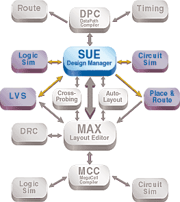
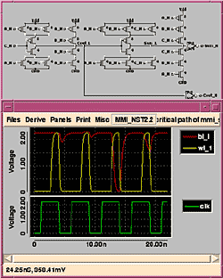
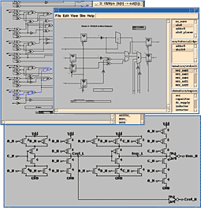
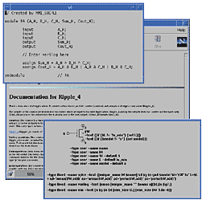

| Micro Magic Tools Overview |
| • SUE Design Manager |
| • DataPath Compiler |
| • MAX Layout Editor and MAX-LS Layout System |
| • MegaCell Compiler |
|
|
D A T A S H E E T

SUE design manager is a graphical environment that allows users to enter, visualize, and control large, complex chip designs. It is the first tool to combine HDL-based functional designs with structural design. This tool understands everything from Verilog to the operation and physical placement of transistors and wires.
Manage Your Design
The SUE design manager is not just another schematic capture tool. It is a complete design environment for capturing all levels and types of design information. It is a
quantum leap in technology that gives the designer the ability to enter, visualize, and control large, complex chip designs.
Enter—Enter designs using the simple graphical user interface. RTL Verilog, gate-level, standard cell, or transistor-level descriptions can all be entered into the same schematic. The SUE design manager can be used from architectural analysis down to transistor-level schematics.
Visualize—The designer can quickly and easily browse all levels of the design hierarchy, pushing from the top level RTL description all the way down to the transistor-level with a click of the mouse. All Verilog, documentation, standard cell, and transistor level views can be observed from the same window.
| Figure 1. View the results of your simulation either directly on the schematic or in its waveform viewer. |
 |
The capabilities of the SUE design manager can easily be extended and customized to fit into any design environment.
Power for All Types of Design
The SUE design manager is for the architect who needs quick prototyping. Quick visibility through all layers of logic and circuit design give the architect feedback to
create high-performance architectures.
This tool is for ASIC or semi-custom designers who cannot currently achieve their IC performance goals in acceptable time to market.
It is also useful for full-custom design organizations that want complete control and visibility at all levels of design and where performance is the name of the game. The SUE design manager was conceived and written by IC designers who wanted a better environment to do their jobs. Everything the designer needs to enter designs, netlist them, and interact with analysis tools is included as standard equipment.
| Figure 2-a. Schematic driven layout generation, cross-probing between layout and schematic, interactive connectivity tracing and real-time DRC. | Figure 2-b. Manage documentation, Verilog, netlists, and schematics with SUE. | |
 |
 |
Features